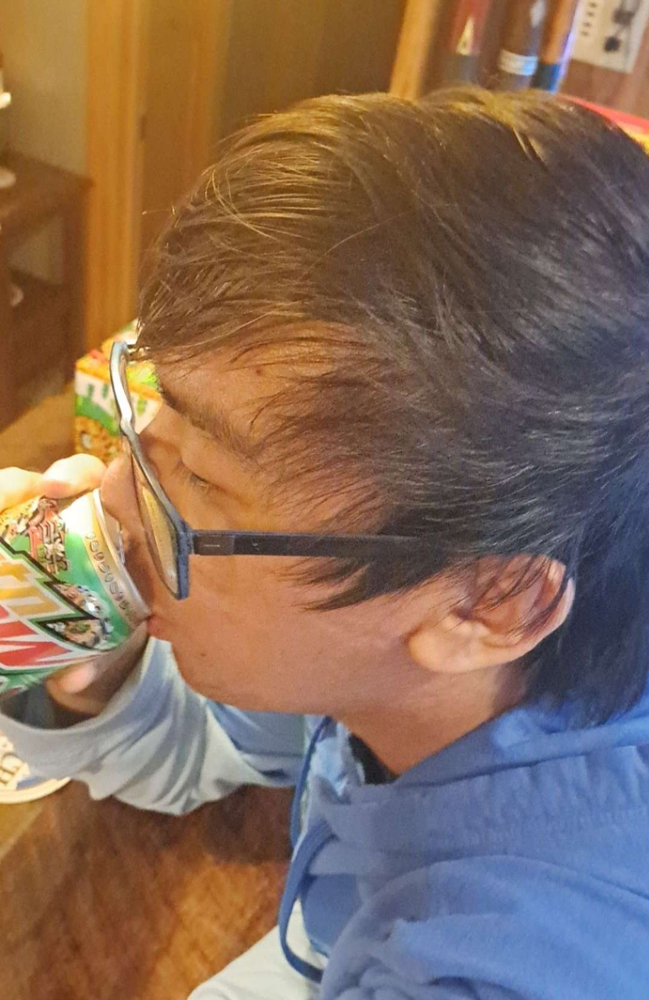

Have you ever wanted to date a sexy and charming man?
It's easy with our revolutionary Pope Francis Dating Simulator™!
The most complex and genius dating sim to ever hit the market, with deep and complex characters and storylines that will reach anyone's heart.
It's features include:
• A plethora of hot and sexy men to make sure there's a man for everyone's tastes.
• The rest is a secret.
Meet the Cute Boys:
Maxwell 'The Duke' Klein
A cute, kind and good at melee young man who you can truly rely on ;)
His big muscles will make anyone swoon
Ryan Rivera
His completionist heart is here to complete you!
Plus, his experience with games like Ace Attorney and Danganronpa makes him a great listener who focuses on the details.
Johnathan Moriarty
The most loving a war lover gets.
Despite his fascinations for the world wars Johnathan is more than just a violent individual, he's also what we in the gaming sphere call a great "Mortal Kuddler".

Tanny Do
What doesn't Tanny Do?
This wonderful individual cares more about you than you care about yourself, there's nothing more comforting than holding his warm hands.
As you can tell the Pope Francis Dating Sim consists of only the finest and cutest men, they're here to satisfy anyone looking for love.